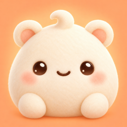

Mochi — もちのへや（以下「本アプリ」）は TrailFusion AI が提供する、声や文字で話せるペットアプリです。本アプリが扱う情報と、その扱い方をご説明します。
ペットの名前・育ち具合、日記・思い出、気分の記録、ことばの引き出し、こころのケアの記録（安全計画とそこに書いた連絡先、整理のメモ、価値観、心配の箱、過ごし方の記録、セルフチェックの結果）、設定などは、お使いの端末（と、ご自身の iCloud 端末バックアップ）にだけ保存し、保存のために私たち開発者のサーバーへ送ることはありません。ただしクラウドAIで話すときは、返事を作るのに必要な会話の文字とメモだけを、その都度送ります（次の項目）。アカウント登録はありません。
もちの返事は、はじめはクラウドAIが作ります。どの端末でも速く話せるようにするためです。あなたが話した声は、Appleの音声認識が端末の中で文字にします（声の録音は送りません）。その文字と、もちのキャラクター・会話の指示、もちが覚えているメモ（ふたりの記憶や覚えておいてほしいこと）、最近の会話、日時を、もちのへやのサーバー（Cloudflare Workers、https://mochipet-ai.trailfusionai.com）経由で Qwen（Qwen3.7 Flash、Alibaba Cloud Model Studio 東京リージョン）へ送り、返事を作ります。写真、ヘルスケアのデータ、日記や気分の記録は送りません。アカウント登録・ログイン・APIキーは不要で、利用者にAIの従量料金はかかりません。Alibaba Cloud に届いた文字は、同社のプライバシー通知（https://www.alibabacloud.com/help/en/model-studio/privacy-notice）に従って扱われます。
初めてクラウドAIで話す前に、送る内容と送り先を画面でお知らせし、同意をおたずねします。同意しない限り、会話の内容は何も送りません。同意は設定の「会話AI」からいつでも取り消せます。取り消した後は送りません。
サーバーは会話の内容を保存しません。ふつうでは考えにくい使われ方を止める利用上限（直近365日で数えます）のために、端末ごとのランダムな識別子、端末ごとの秘密の値のSHA-256ハッシュ（秘密の値そのものはこの端末のキーチェーンにだけ置き、同期もバックアップもしません）、1日ごとのリクエスト数・トークン数・会話の回数だけを保存し、365日を過ぎたら削除します。もちのへや Pro を使うときは、Apple が署名した購入記録をサーバーで確認し、その識別子に Pro の有効期限・購入の識別番号・商品・環境（本番かテストか）を結びつけて保存します（支払い情報は受け取りません）。友だち招待を使うときは、招待コード、招待コードを入れた端末の識別子、入れた日を保存します。名前・連絡先・会話は送りません。
iPhone 15 Pro／15 Pro Max以降（iPhone 16シリーズ・16e、iPhone 17シリーズなど）、A17 Pro・M3以降のチップでメモリ8GB以上のiPad、メモリ16GBのM1／M2 iPad Proでは、設定の「会話AI」でオフラインを選べます。オフラインでは返事も端末内のGemma 4 E4Bで作り、会話をどこにも送りません。会話用モデル（約5.2〜5.5GBのデータファイル）は、オフラインを選んだときに公開配布元のHugging Faceから一度だけ取得し、内容を照合してから使います（Wi-Fiでは自動、モバイル通信は選んだときだけ）。このとき配布元に届くのは通信に必要なIPアドレスなどだけです。ほかの端末ではクラウドAIで話します。
マイクはもちとの音声会話中に使い、録音ファイルは保存しません。Appleの日本語オンデバイス音声認識だけを使い、どちらのモードでも声の録音は送りません。利用できない場合は理由を表示し、クラウド認識へ切り替えません。もちの読み上げの声も端末の中で作ります（対応端末ではVOICEVOX:ずんだもん、古い端末ではiPhoneの声）。
許可した場合、今日の歩数を読み取って「おさんぽ」に使い、選んだ気分を「心の状態」に記録できます。設定でオンにしたときだけ、前の晩の睡眠時間を読み取り、気分の記録に使います。ヘルスケアのデータは端末の外へ送らず、広告やマーケティングには使いません。
「とくべつなおへや」と「もちのへや Pro」（自動更新サブスクリプション。ファミリー共有に対応）の購入は Apple が処理します。私たちが支払い情報を受け取ることはありません。購入の確認には Apple が署名した購入記録を使います。
本アプリは広告を表示せず、トラッキングも行わず、外部の分析ツールも使いません。
こどもモードでは、ことばがやさしくなり、課金の売り場や Pro の案内、友だち招待は表示されません。こどもモードでは、クラウドAIへの同意の画面で、おうちの人と一緒に読むようお願いしています。AIの返答には誤りがあり得るため、保護者の方と一緒にご利用ください。
設定の「すべてのデータを削除」、または本アプリの削除で、端末内のデータを削除できます。クラウドAIへの送信は、設定の「会話AI」で同意を取り消すと止まります。サーバーの利用回数の記録は365日を過ぎると自動で削除します。ご自身で書き出したバックアップやOSの端末バックアップは、それぞれの保存先でも削除してください。旧バージョンの会話用APIキーは、更新時に読み出さず削除します。
ご質問は trailfusionai@gmail.com までご連絡ください。いただいた情報は返信のためにだけ使います。
2026年11月2日
Mochi (the "App") is a pet companion you can talk to by voice or text, provided by TrailFusion AI. This policy explains what information the App handles and how.
Your pet's name and growth, journal and memories, mood log, word cards, care records (your safety plan and the contacts in it, sorted-out notes, values, worry box, daily log and self-check results) and settings are stored only on your device (and in your own iCloud device backup); we never send them to our servers for storage. When you talk with the cloud AI, only the conversation text and notes needed for a reply are sent with each request (see below). There is no account.
By default, Mochi's replies are written by a cloud AI so that conversation is fast on any device. Your voice is turned into text on your device by Apple's speech recognition (audio is never sent). That text, Mochi's character and conversation instructions, the notes Mochi remembers (shared memories and things you asked Mochi to remember), the recent conversation and the date and time are sent through MochiPet's own server (Cloudflare Workers, https://mochipet-ai.trailfusionai.com) to Qwen (Qwen3.7 Flash, Alibaba Cloud Model Studio, Tokyo region) to write the reply. Photos, Health data, your journal and mood log are not sent. No account, login or API key is needed, and you pay no metered AI fees. Alibaba Cloud handles the text under its privacy notice (https://www.alibabacloud.com/help/en/model-studio/privacy-notice).
Before your first cloud conversation, the app shows what will be sent and to whom, and asks for your consent. Without consent, nothing from your conversation is sent. You can withdraw consent at any time in Settings > Conversation AI; after that nothing is sent.
The server does not store conversation content. For usage limits that stop abuse (counted over a rolling 365 days) it keeps only a random install identifier, a SHA-256 hash of a per-install secret (the secret itself stays only in this device's Keychain, not synced or backed up) and daily request, token and conversation-turn counts, and deletes them after 365 days. When you use MochiPet Pro, the server verifies the Apple-signed purchase record and stores, with that identifier, the Pro expiry date, the purchase's transaction ID, the product and the environment (production or test); we never receive payment information. When you use friend invitations, it stores the invite code, the identifiers of installs that entered it and the date. No names, contacts or conversations are sent.
On iPhone 15 Pro / 15 Pro Max and newer (iPhone 16 series incl. 16e, iPhone 17 series and later), iPads with an A17 Pro, M3 or newer chip and 8 GB or more of memory, and 16 GB M1/M2 iPad Pro, you can choose Offline in Settings > Conversation AI. Offline, replies are also written on your device by Gemma 4 E4B and nothing from your conversation is sent. The conversation model (a data file of about 5.2–5.5 GB) is downloaded once from its public distributor, Hugging Face, when you choose offline mode, and verified before use (automatically on Wi-Fi; on cellular only if you choose). Only what the connection needs, such as your IP address, reaches the distributor. Other devices use the cloud conversation.
The microphone is used during voice conversation. Recordings are not saved. Only Apple’s on-device Japanese speech recognition is used, and audio is never sent in either mode. If unavailable, the app explains why and does not switch to cloud recognition. Mochi's voice is also made on your device (VOICEVOX: Zundamon on capable devices, the iOS voice on older ones).
With your permission, the App reads today's step count for Mochi's walks and can log the mood you choose as State of Mind in Health. Only when you turn it on, it reads last night's sleep time for your mood log. Health data never leaves your device and is never used for advertising or marketing.
Special room purchases and MochiPet Pro (an auto-renewable subscription that supports Family Sharing) are processed by Apple. We never receive your payment information. Purchases are verified with Apple-signed transactions.
The App shows no ads, does not track you, and uses no third-party analytics.
Kids mode uses simpler words and hides the paid shop, Pro offers and friend invitations. In kids mode, the cloud AI consent screen asks the child to read it with a parent. AI replies can contain mistakes; children should use the app with a parent or guardian.
Use Delete all data in Settings or delete the app to remove local app data. Withdrawing consent in Settings > Conversation AI stops anything being sent to the cloud AI. The server's usage counts are deleted automatically after 365 days. Delete exported backups and OS device backups separately at their storage locations. On upgrade, the obsolete conversation API key is removed without reading it.
Questions? Email trailfusionai@gmail.com. We use what you send only to reply.
November 2, 2026
Mochi（以下称“本应用”）是由 TrailFusion AI 提供、可以用声音或文字聊天的宠物应用。本政策说明本应用处理哪些信息以及如何处理。
宠物的名字和成长、日记与回忆、心情记录、话语卡片、心灵关怀记录（安全计划及其中的联系人、整理笔记、价值观、担心盒子、生活记录、自我检查结果）和设置只保存在你的设备（以及你自己的 iCloud 设备备份）中，我们不会为了保存而把它们发送到服务器。不过，与云端 AI 聊天时，每次只会发送生成回复所需的对话文字和笔记（见下一项）。无需注册账号。
为了让任何设备都能快速聊天，Mochi 的回复默认由云端 AI 生成。你说的话会由 Apple 语音识别在设备内转换成文字（录音不会被发送）。这些文字、Mochi 的角色与对话指示、Mochi 记住的笔记（你们的回忆和希望它记住的事）、最近的对话以及日期时间，会经由 Mochi 自己的服务器（Cloudflare Workers，https://mochipet-ai.trailfusionai.com）发送给 Qwen（Qwen3.7 Flash，阿里云 Model Studio 东京区域）来生成回复。照片、健康数据、日记和心情记录不会被发送。无需注册账号、登录或 API 密钥，也不会向你收取 AI 按量费用。阿里云按照其隐私声明（https://www.alibabacloud.com/help/en/model-studio/privacy-notice）处理收到的文字。
第一次使用云端 AI 聊天前，会先显示要发送的内容和发送对象，并征求你的同意。不同意就不会发送任何对话内容。你可以随时在设置的“对话AI”中撤回同意，撤回后不再发送。
服务器不保存对话内容。为了防止异常使用的用量上限（按最近365天计算），只保存每台设备的随机标识符、每台设备密钥的 SHA-256 哈希值（密钥本身只保存在本设备的钥匙串中，不同步、不备份）以及每天的请求次数、token 数和对话次数，超过365天后删除。使用 Mochi 小屋 Pro 时，服务器会验证 Apple 签名的购买记录，并将 Pro 的到期日、购买的交易编号、商品和环境（正式或测试）与该标识符一起保存（不会收到付款信息）。使用邀请朋友功能时，会保存邀请码、输入邀请码的设备标识符及输入日期。不会发送名字、联系人或对话内容。
iPhone 15 Pro／15 Pro Max 及更新机型（iPhone 16 系列含 16e、iPhone 17 系列等）、搭载 A17 Pro 或 M3 及更新芯片且内存 8GB 以上的 iPad，以及内存 16GB 的 M1／M2 iPad Pro，可以在设置的“对话AI”中选择离线。离线时回复也由设备内的 Gemma 4 E4B 生成，不会发送任何对话内容。对话模型（约 5.2〜5.5GB 的数据文件）会在你选择离线模式时从公开发布方 Hugging Face 下载一次，并在校验后使用（Wi-Fi 下自动，移动网络仅在你选择时）。发布方只会收到通信所需的 IP 地址等信息。其他设备使用云端对话。
语音对话时使用麦克风，不保存录音文件。只使用Apple的设备端日语语音识别，两种模式都不会发送录音。无法使用时会显示原因，不会切换到云端识别。Mochi 朗读的声音也在设备内生成（支持的设备使用 VOICEVOX:ずんだもん，较旧的设备使用 iPhone 的声音）。
在你允许后，本应用会读取今天的步数用于“散步”，并可把你选择的心情记录到“健康”的“心理状态”。仅在你开启时，会读取前一晚的睡眠时间用于心情记录。健康数据不会离开设备，也不会用于广告或营销。
“特别的房间”和“Mochi 小屋 Pro”（自动续期订阅，支持家人共享）由 Apple 处理付款，我们不会收到你的付款信息。购买通过 Apple 签名的交易记录确认。
本应用不显示广告、不进行追踪，也不使用第三方分析工具。
儿童模式使用更简单的语言并隐藏付费商店、Pro 介绍和邀请朋友功能。儿童模式下，云端 AI 的同意画面会请孩子和家长一起阅读。AI 的回答可能出错，请家长陪同使用。
在设置中选择“删除所有数据”或删除本应用，可删除本地应用数据。在设置的“对话AI”中撤回同意后，就不会再向云端 AI 发送内容。服务器的用量记录超过365天后自动删除。自行导出的备份及系统设备备份需在各自保存位置另行删除。更新时会删除旧版对话API密钥，不读取密钥内容。
如有疑问，请发送邮件至 trailfusionai@gmail.com。你提供的信息只用于回复。
2026年11月2日
Mochi(이하 '본 앱')는 TrailFusion AI가 제공하는, 목소리나 글로 대화할 수 있는 반려 펫 앱입니다. 본 앱이 다루는 정보와 처리 방법을 안내합니다.
펫의 이름과 성장, 일기와 추억, 기분 기록, 말 서랍, 마음 돌봄 기록(안전 계획과 그 안의 연락처, 정리 메모, 가치, 걱정 상자, 생활 기록, 셀프 체크 결과), 설정은 사용 중인 기기(와 본인의 iCloud 기기 백업)에만 저장되며, 저장을 위해 개발자의 서버로 보내지 않습니다. 다만 클라우드 AI로 대화할 때는 답변에 필요한 대화 글과 메모만 그때그때 보냅니다(다음 항목). 계정 등록은 없습니다.
어떤 기기에서도 빠르게 대화할 수 있도록, 모찌의 답변은 기본적으로 클라우드 AI가 만듭니다. 말한 목소리는 Apple 음성 인식이 기기 안에서 글자로 바꿉니다(녹음은 보내지 않습니다). 그 글과 모찌의 캐릭터・대화 지시, 모찌가 기억하는 메모(함께한 기억과 기억해 달라고 한 것), 최근 대화, 날짜와 시간을 모찌의 자체 서버(Cloudflare Workers, https://mochipet-ai.trailfusionai.com)를 거쳐 Qwen(Qwen3.7 Flash, Alibaba Cloud Model Studio 도쿄 리전)으로 보내 답변을 만듭니다. 사진, 건강 데이터, 일기와 기분 기록은 보내지 않습니다. 계정 등록・로그인・API 키가 필요 없으며, AI 종량 요금도 내지 않습니다. Alibaba Cloud는 받은 글을 자사의 개인정보 고지(https://www.alibabacloud.com/help/en/model-studio/privacy-notice)에 따라 처리합니다.
처음 클라우드 AI로 대화하기 전에 보낼 내용과 받는 곳을 화면에 보여 드리고 동의를 여쭙니다. 동의하지 않으면 대화 내용은 아무것도 보내지 않습니다. 동의는 설정의 '대화 AI'에서 언제든 취소할 수 있으며, 취소한 뒤에는 보내지 않습니다.
서버는 대화 내용을 저장하지 않습니다. 비정상적인 사용을 막는 이용 한도(최근 365일 기준)를 위해 기기별 무작위 식별자, 기기별 비밀값의 SHA-256 해시(비밀값 자체는 이 기기의 키체인에만 두며 동기화・백업하지 않습니다), 하루 단위 요청 수・토큰 수・대화 횟수만 보관하고, 365일이 지나면 삭제합니다. 모치의 방 Pro를 사용할 때는 Apple이 서명한 구입 기록을 서버에서 확인하고, 그 식별자에 Pro 만료일・구입 거래 번호・상품・환경(정식 또는 테스트)을 연결해 보관합니다(결제 정보는 받지 않습니다). 친구 초대를 사용할 때는 초대 코드, 초대 코드를 입력한 기기의 식별자, 입력한 날짜를 보관합니다. 이름・연락처・대화는 보내지 않습니다.
iPhone 15 Pro／15 Pro Max 이후(iPhone 16 시리즈・16e, iPhone 17 시리즈 등), A17 Pro・M3 이후 칩에 메모리 8GB 이상인 iPad, 메모리 16GB의 M1／M2 iPad Pro에서는 설정의 '대화 AI'에서 오프라인을 고를 수 있습니다. 오프라인에서는 답변도 기기 안의 Gemma 4 E4B가 만들며 대화 내용을 어디에도 보내지 않습니다. 대화 모델(약 5.2〜5.5GB의 데이터 파일)은 오프라인 모드를 고를 때 공개 배포처인 Hugging Face에서 한 번만 내려받아 확인한 뒤 사용합니다(Wi-Fi에서는 자동, 모바일 데이터는 선택한 경우에만). 배포처에는 통신에 필요한 IP 주소 등만 전달됩니다. 다른 기기에서는 클라우드 AI로 대화합니다.
음성 대화 중 마이크를 사용하며 녹음 파일은 저장하지 않습니다. Apple의 기기 내 일본어 음성 인식만 사용하며, 어느 모드에서도 녹음은 보내지 않습니다. 사용할 수 없으면 이유를 표시하고 클라우드 인식으로 전환하지 않습니다. 모찌가 읽어 주는 목소리도 기기 안에서 만듭니다(지원 기기에서는 VOICEVOX:ずんだもん, 오래된 기기에서는 iPhone 목소리).
허용한 경우 오늘의 걸음 수를 읽어 '산책'에 사용하고, 선택한 기분을 건강 앱의 '마음 상태'에 기록할 수 있습니다. 설정에서 켠 경우에만 전날 밤의 수면 시간을 읽어 기분 기록에 사용합니다. 건강 데이터는 기기 밖으로 보내지 않으며 광고나 마케팅에 사용하지 않습니다.
'특별한 방'과 '모치의 방 Pro'(자동 갱신 구독, 가족 공유 지원) 구입은 Apple이 처리하며, 개발자는 결제 정보를 받지 않습니다. 구입은 Apple이 서명한 거래 기록으로 확인합니다.
본 앱은 광고를 표시하지 않고, 추적하지 않으며, 외부 분석 도구도 사용하지 않습니다.
어린이 모드에서는 쉬운 말을 쓰고 유료 상점・Pro 안내・친구 초대를 숨깁니다. 어린이 모드에서는 클라우드 AI 동의 화면에서 보호자와 함께 읽도록 안내합니다. AI의 답변에는 오류가 있을 수 있으므로 보호자와 함께 이용해 주세요.
설정의 모든 데이터 삭제 또는 앱 삭제로 기기 내 앱 데이터를 삭제할 수 있습니다. 설정의 '대화 AI'에서 동의를 취소하면 클라우드 AI로 보내지 않습니다. 서버의 이용 횟수 기록은 365일이 지나면 자동으로 삭제됩니다. 직접 내보낸 백업과 OS 기기 백업은 각 저장 위치에서 별도로 삭제해 주세요. 업데이트 시 이전 대화용 API키는 읽지 않고 삭제합니다.
문의는 trailfusionai@gmail.com로 보내 주세요. 보내 주신 정보는 답변에만 사용합니다.
2026년 11월 2일